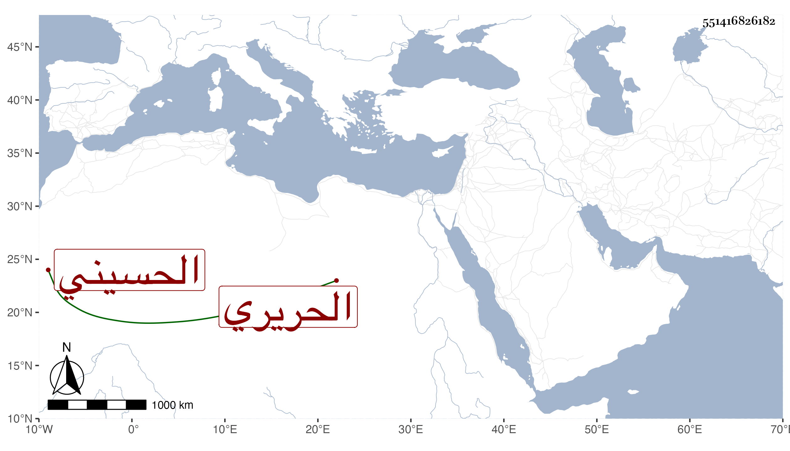

0902Sakhawi.DawLamic.ITO20230111-ara1.EIS1600.551416826182
Biography ID: 551416826182
782
محمد بن قاسم بن عيسى البدر الحسيني سكنا الحريري ويعرف بابن قاسم . ممن اشتغل عند الزين عبد الرحيم الإبناسي والشمس بن قاسم وغيرهما وحضر عند البقاعي والزيني زكريا وخالطه في ابتدائه ابن قريبه والحليبي وتزوج ابنه ابنه عبد الله التاجر وحج بها بعد موته في موسم سنة ثمان وتسعين وجاور التي تليها وكان يحضر دروس قاضيها بل حضر عندي في شرح التقريب وقرأ علي في البخاري وجلس ببعض الحوانيت ولا يخلو من مشاركة وفهم مع أدب وعقل وسياسة .
